This section describes step-by-step how to installation new
instance of Platform-Manager on a server. The configuration of a server
is not described in this tutorial. So please Google it if you
don't know how to install and setup tools like apache for php/mysql server.
Prerequisites: server configuration
To run, Platform-Manager needs a web / php server and a mysql server
- PHP version must be greater than or equal to version 5.2
- To install Platform Manager, you must have access to the server
file system (FTP, SSH ...) and an access to the MySQL database
(MySQL server address, login, password)
- It is necessary that the web server authorizes the use of
.htaccess files (protection of the source files and URL rewrite)
-
The php RewriteEngine module has to be installed and activated
Copy of sources
- Download the sources here
- Unzip it
- Delete the directory "docs" (it is needed only for the web documentation)
- Rename the file Config/conf.ini.sample to Config/conf.ini
- Edit Config/conf.ini
; Configuration
[Installation]
rootWeb = /
[BD]
dsn =
login =
pwd =
[Menu]
headless = false
[Modules]
modules[] = "core"
modules[] = "ecosystem"
modules[] = "resources"
modules[] = "services"
modules[] = "booking"
modules[] = "catalog"
modules[] = "invoices"
modules[] = "statistics"
modules[] = "mailer"
modules[] = "documents"
modules[] = "antibodies"
modules[] = "quote"
modules[] = "bulletjournal"
modules[] = "com"
[Company]
name = "Platform-Manager"
- If you install Platform-Manager at http://your_url.com/platformmanager for example instead of www.your_url.com,
you need to change rootWeb = / to rootWeb = /platformmanager/ at line 4
-
You can change the variable company name at line 31 to your lab, institute or company name
-
Copy the sources to your server file system (via FTP or SSH or ...)
- Edit the access permissions to the directory Config for the web
user to be allowed to read and write. (This is temporary for the
installation only. You should put it back on read only for more
safety after the installation)
-
Edit the access permissions to the directory data for the web
user to be allowed to read and write. All the data of the managed
by Platform-Manager are stored in the data directory.
Initialization of the database
Create a new mysql database on your server using phpmyadmin or mysql
command CREATE DATABASE nameOfYourDatabase.
First connection
In this paragraph, we will connect to the Platform-Manager web
interface to initialize the database
- open the URL http://your_url.com/caches
-
open the URL http://your_url.com/install
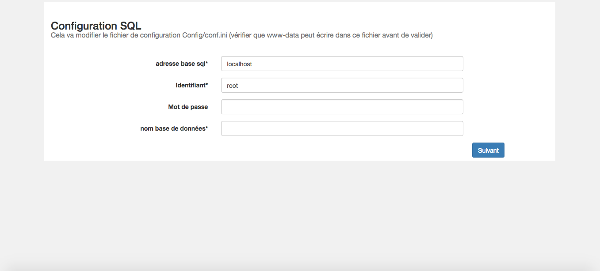
-
Fill the form with your mysql server information:
- In most of the case sql address should be localhost or 127.0.0.1
- Login to the sql database with read and write authorizations
- Password
- Name of the database you created in the section Initialization of the database
-
If everything goes correctly you will be directed to the default login page of platform-manager.
If not, make sure that the php rewrite engine is on, the .htaccess is on (see section Prerequisites ) and that the file system authorizations are correct (see section Copy of sources)
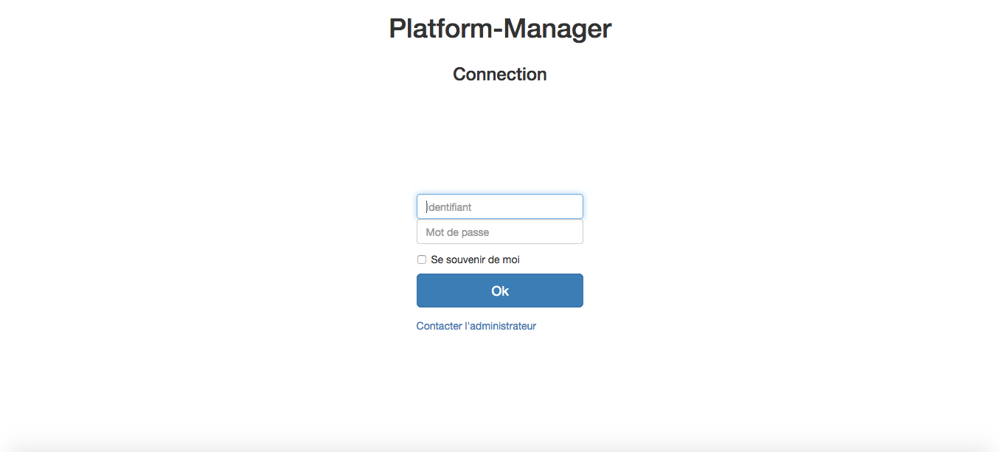
-
To finish the installation, go to the URL http://your_url.com/update .
This will initialize the database for all the modules listed in the config file: Config/Config.ini
Configuration
The goal of this section is to explain the basic configuration of Platform-Manager that
the administrator can do.
First: change the admin password!
-
go to the root URL of your Platform-Manager http://your_url.com
-
Connect to your new instance of Platform-Manager using the login:admin
and the password:admim
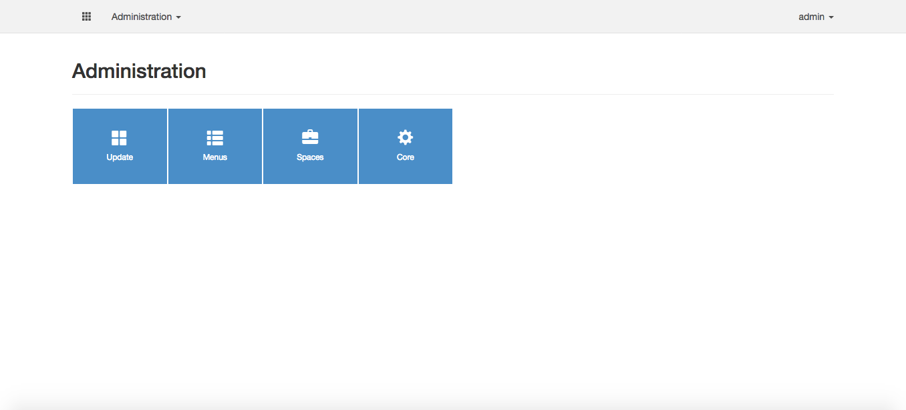
-
Click on the menu admin > My account and fill the form with a new password.
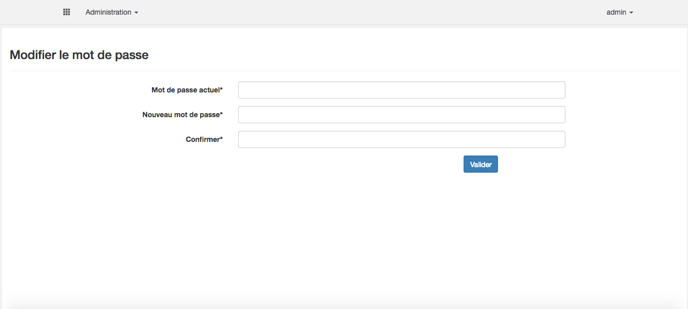
Create a new Space
Platform-Manager is made of spaces. Thus, you need at least one
space to use Platform-Manager modules
Create the space
-
Click on the menu Administration > Spaces , and then click on the button Add space.
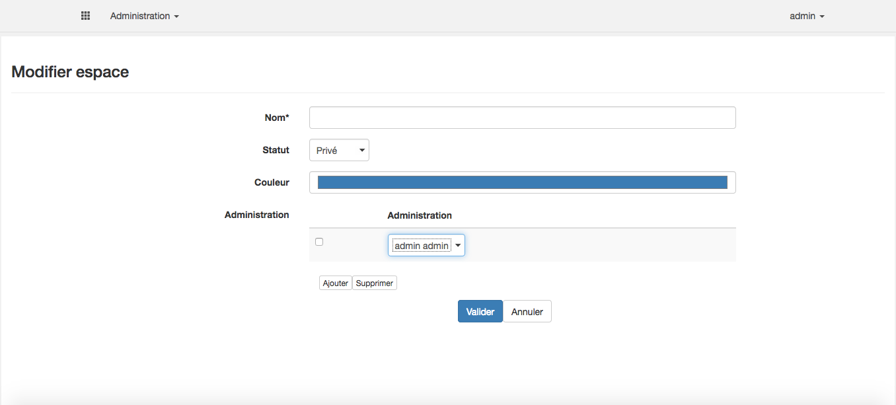
-
Fill the form:
- Give your space a name
- Your space can be public or private. Public means
that any user of the application can access the space.
When a space is public, you can still have public and
private content in the space (see next session).
-
Choose a color for the page and menu header of your space
-
Set at least one administrator of the space. As space administrator can be
a regular user of platform-manager (i.e. no need to be a Platform-Manager admin to admin a space)
-
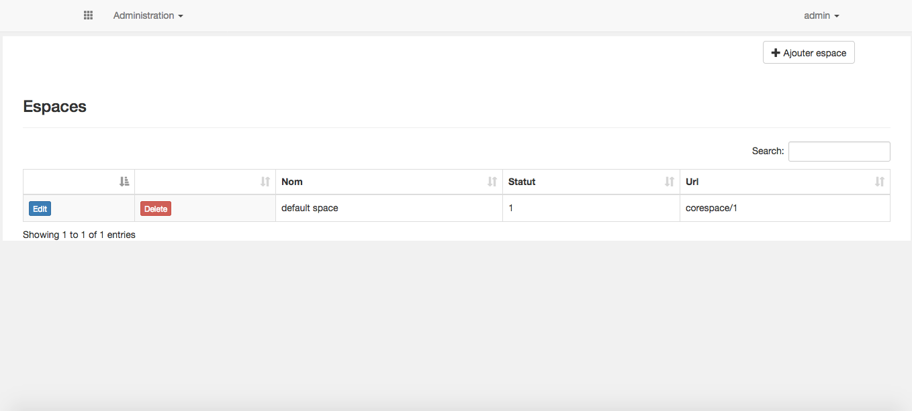
When your space is created, you can see it URL. In the tutorial, we have the URL corespace/1. Actually 1 is the
id of the space in the database.
To access the space, go to the URL: http://your_url.com/corespace/1. We will see in section Create a new Menu how to set this
URL in a menu.
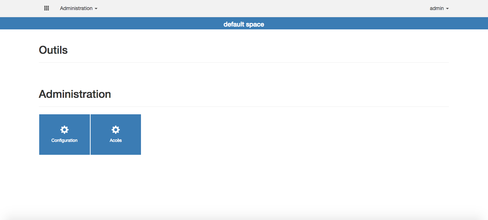
Configure modules
The space is we just created is empty (i.e. no tools are activated).
-
Tools are activated in the Configuration menu od the space. Here you have the list of each available modules.
This list of modules is the one in the Config/config.ini file.
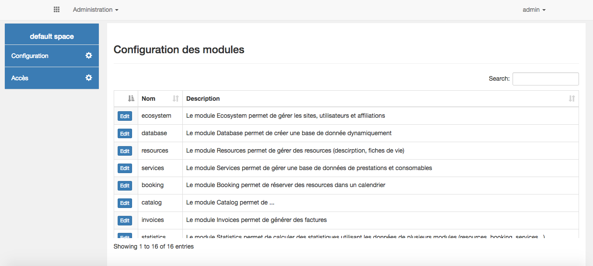
-
Let activate the user database tool from the ecosystem module. Click on the edit button
of the ecosystem item in the table:
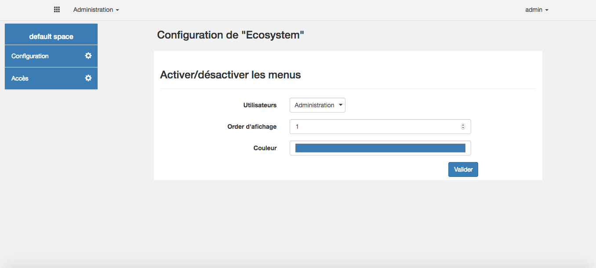
-
Setup that only administrator of the space can access the user tool. This means than even if the
space is public, only the administrator of the module will see and be able to use the user tool.
-
Set a display order. It is a number giving the position of the tool in the space menu (the menu on the left of the space)
-
Choose a color for the tool. (It is the color that will be use in the space menu bar for this specific tool)
The user tools from the module "ecosystem" are now activated for your space. See the ecosystem documentation to learn how to use it
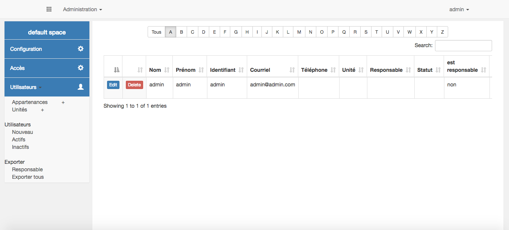
Configure access
In both public or private space, you can specify the status of each user for the space.
Platform-manager have 4 space status:
-
Visitor: for people who can only see content
-
User: for people who can edit basic content (for example add a reservation in a booking calendar)
-
Manager: for people who can edit advanced content (for example add a new resource, or a generate invoices or statistics)
-
Administrator for people who can edit everything in the space (including configuration and access)
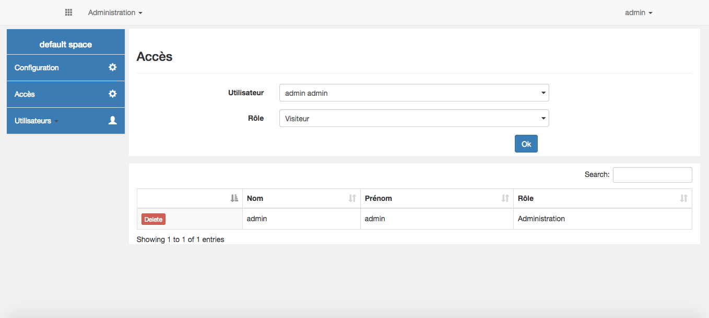
Each tool provided by modules are note designed for a specific category of people (visitor, user, manager, admin).
It's the job of the space administrator to specify which category of people can access which tools. For
example in the section Configure modules we activated the user management tool for the space
managers only. Actually, the space manager could have select "administrator" to allow only administrator to
add and modify users accounts.
The space we created in section Create a new Space, is accessible using the URL
http://your_url.com/corespace/1. For convenient access to spaces, Platform-Manager provide
a menu maker tool.
Create the menu
Go to the home page of your Platform-Manager installation: http://your_url.com/, and
click on the Menus icon. You can also access menu maker tool using "Administration > Menus".
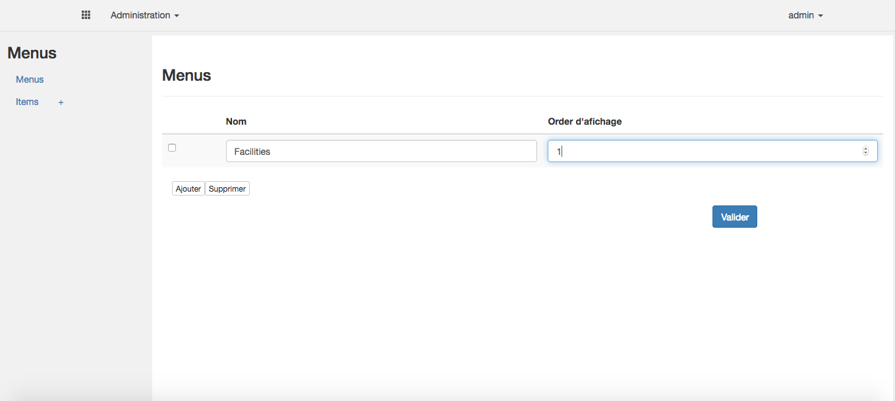
Fill the form to add a new Menu. In this tutorial, we will create a menu to store spaces dedicated to
core facilities. So, let's call it "Facilities".
When you validate the form, you can see your new menu showing in main navigation bar. The display
order specified in the menus form correspond to the position of the menu in the navigation bar. The administration
menu is managed by the Platform-Manager core. Thus, you cannot change it and it will always display at the last position
in the right.
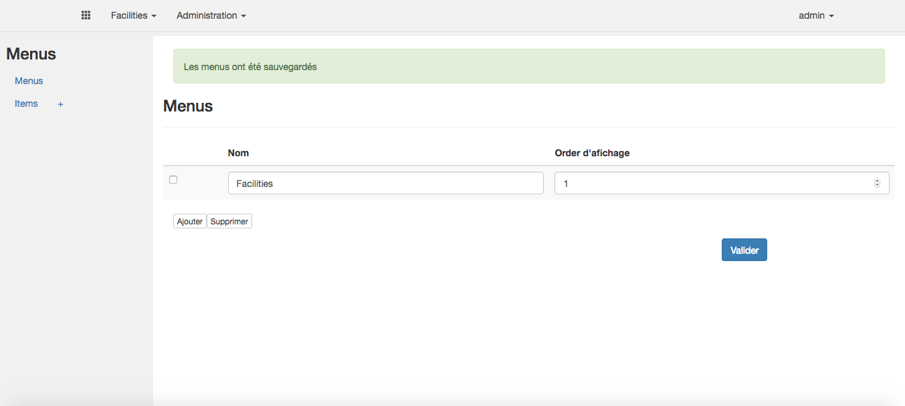
Set items
Let's now fill the menu we created with items:
- Click on the + button near the "item" link
- Fill the form:
- Name is the name that will be used to display the item
- Url is the URL of your space (ex: corespace/1). You can set here any URL. For example,
you can set the address of a specific module of the space instead of the home page of the space
- Icon is the icon that will be displayed in the Platform-Manager menu home page
- Menu is the menu the item belongs to. "Facilities" in our example
- Color select a color for the item in the Platform-Manager menu home page
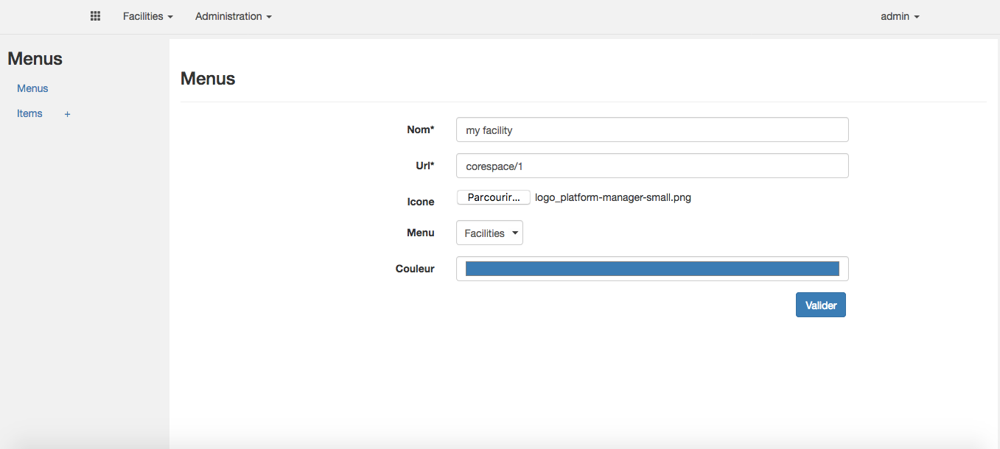
- Back to the Platform-Manager home page, you have now the link to access the space
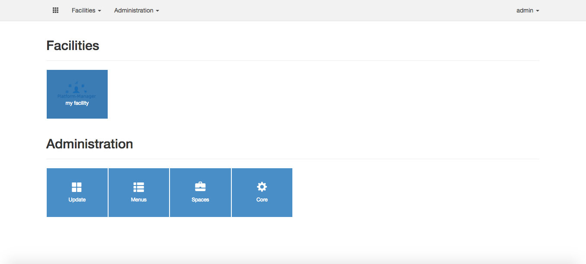